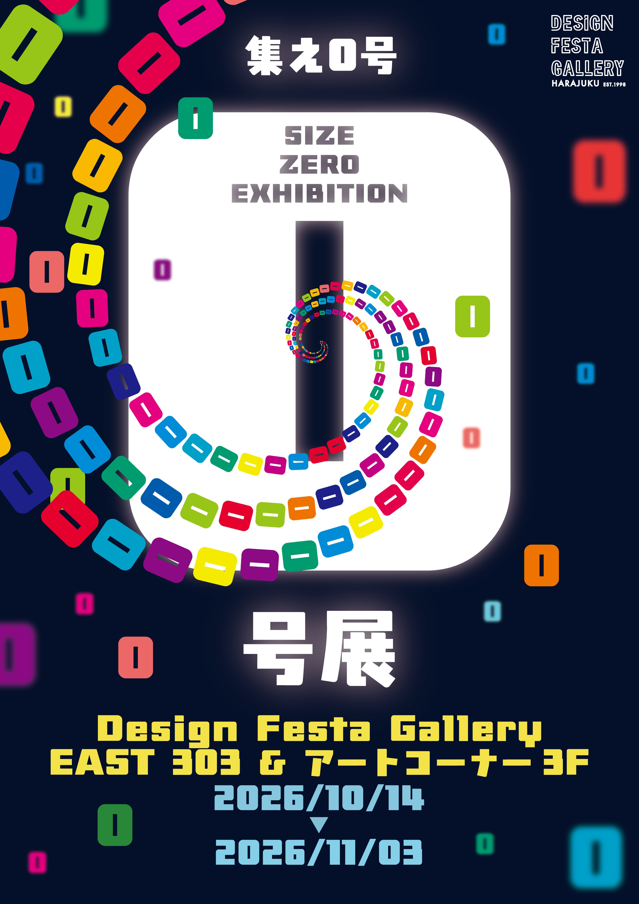
展示会出展
原宿「0号展」
片手にのるほどの小さなS0キャンバスに、ねずみのちょろりたちを描きました。手描きの作品3点を展示します。
- 時間
- 11:00〜20:00
- 会場
- デザインフェスタギャラリー原宿
EAST 303 - 作品番号
- No.088
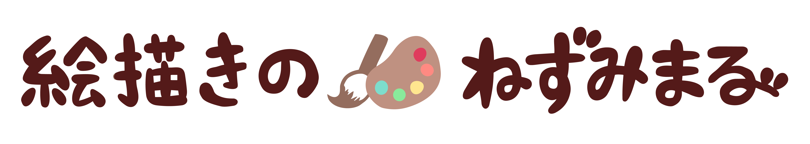
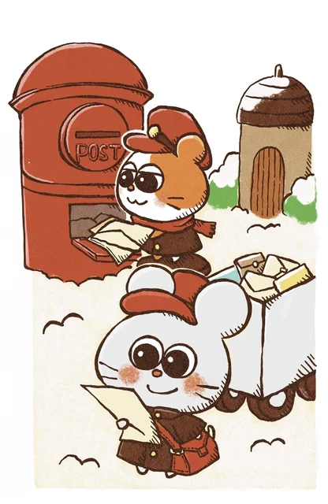
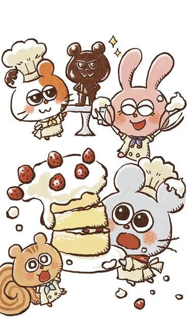
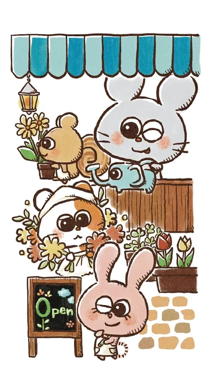
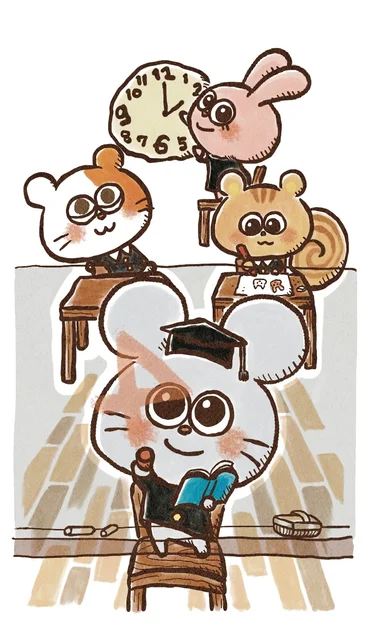
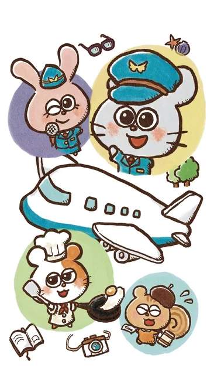
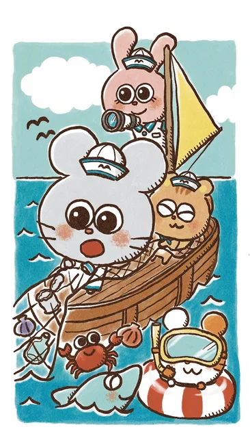
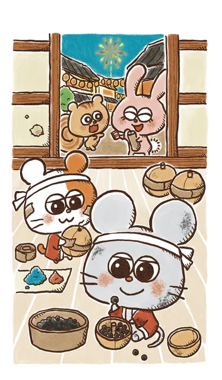
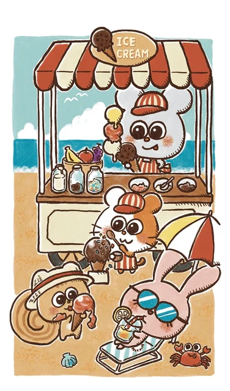
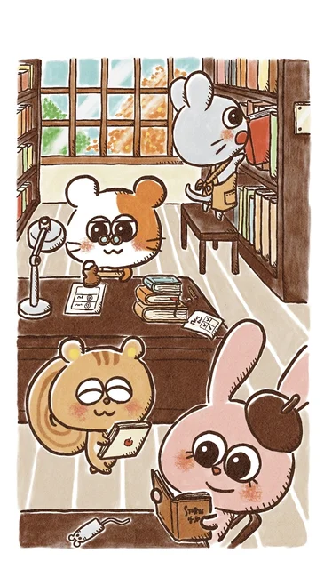
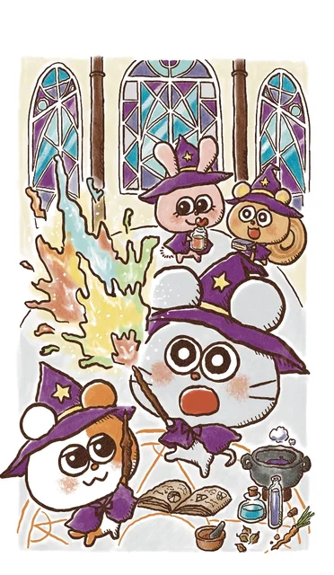
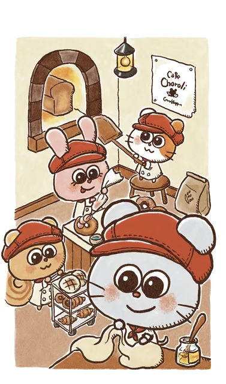
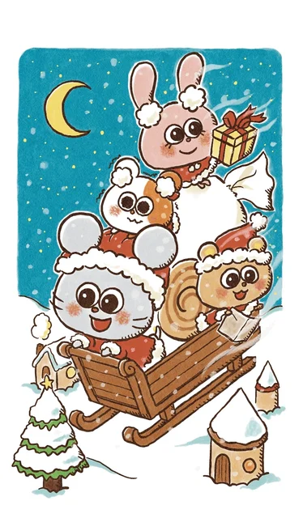
おえかきやさん・ねずみまる 公式ホームページ
あたたかくて、ちょっと楽しい。
まんまる寄り目のなかまたちと、
日々の小さな物語を描いています。
EVENTS & NEWS
ちょろりたちに会える場所と、いま挑戦していること。

展示会出展
片手にのるほどの小さなS0キャンバスに、ねずみのちょろりたちを描きました。手描きの作品3点を展示します。
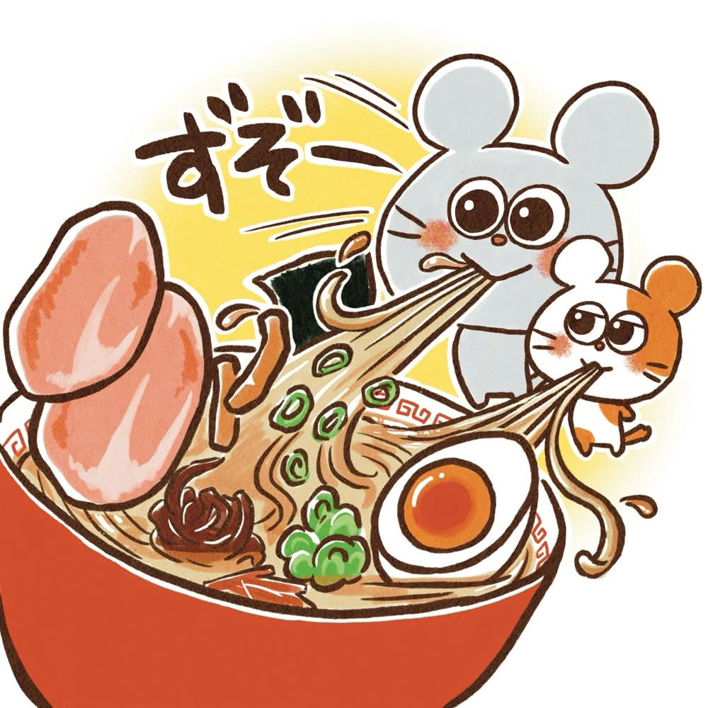
部門1 ファイナリスト
ちょろりとちゃまるが部門1のファイナリストに！SNS反応・Web一般投票ともに3位をいただきました。久留米の街で、缶バッジの応援ガチャ販売へ進みます。
2026年10月10日時点の情報です。最新の日程・販売情報は各イベントの案内をご確認ください。
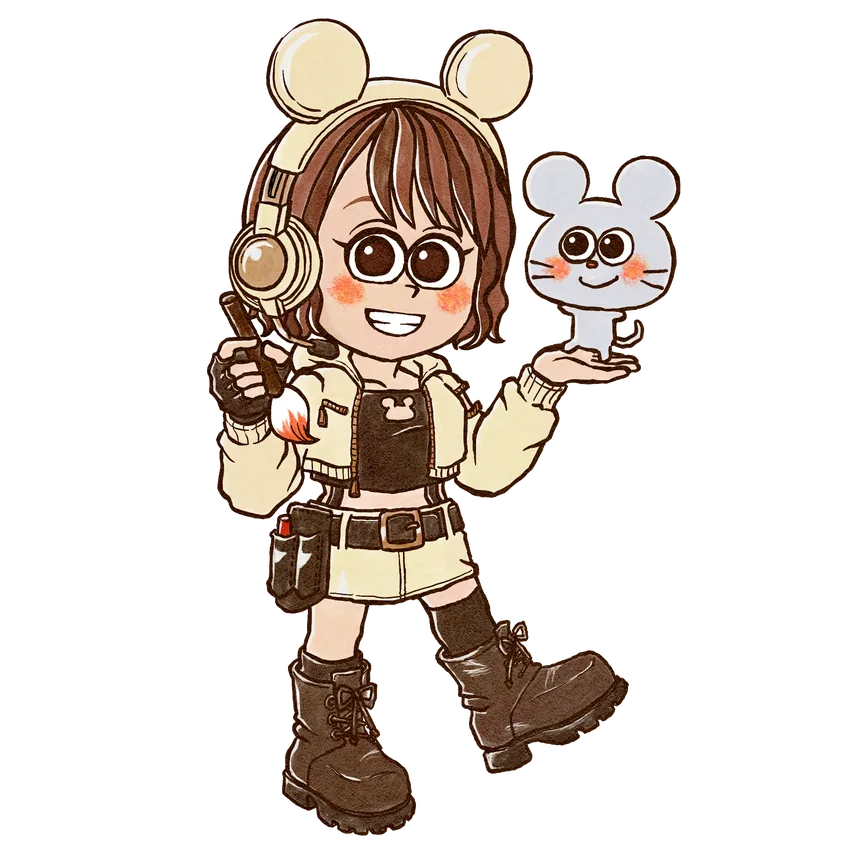
ABOUT ME
げっ歯目似の絵描き・ねずみまるです。
寄り目が特徴のキャラクターを描きます。
挿絵・漫画・間違い探し・アイコン・似顔絵・ロゴ・名刺・人物デフォルメなど。
ご依頼主さまの気持ちを汲んで、はやく描きあげるのが持ち味です。
ORIGINAL CHARACTER
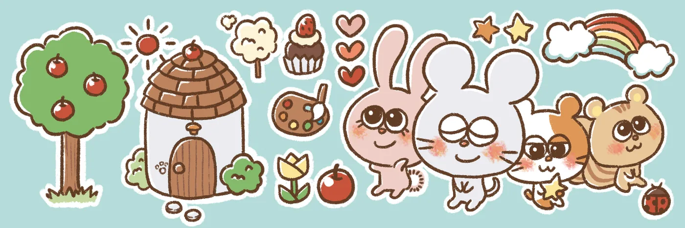
ちょろりと、ちゃまるの小さな世界
まんまるの目と、やさしいほっぺ。ねずみのちょろりと仲間たちが、毎日の小さな「うれしい」を届けます。
キャラクター紹介、まちがいさがし、ゲーム、LINEスタンプなどをまとめたページへ。
ちょろりの世界をのぞくPORTFOLIO
気になるカテゴリから、作品をご覧ください。
HISTORY
作品を通して出会えた、これまでの出来事。
受賞 MZDAO PRコンテスト X部門 最優秀賞
受賞 Cluster GAMEJAM2022 テーマ賞受賞作品のワールド制作・バナーを担当
受賞 7月 Nコレ大阪賞（夢見詩葉）
活動 イラストレーターとして独立開業
展示 渋谷PARCO、京セラドーム大阪、和歌山城天守閣などで作品を展示
展示 みやざきアートセンター、松本市立博物館、世田谷美術館などで作品を展示
展示 JR山手線 新橋駅・原宿駅・品川駅で作品を展示
掲載 書籍『CUT 2024年度版』に掲載
詳しい活動・展示情報は リットリンク にまとめています。
PROFILE
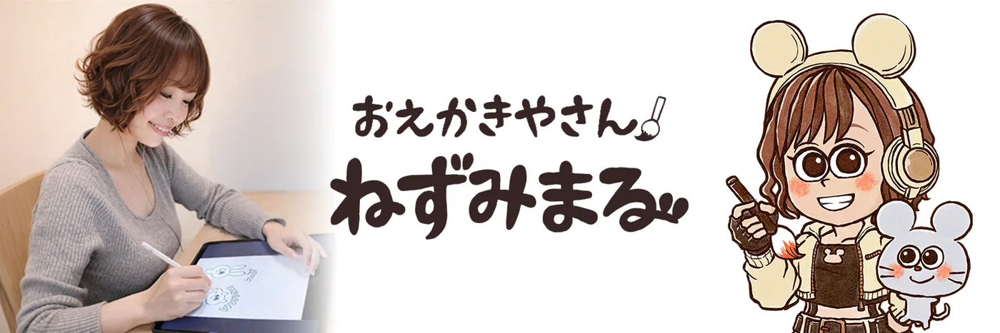
はじめまして、絵描きのねずみまるです。
キャラクターや似顔絵、挿絵、デザインを通して、伝えたい気持ちをあたたかい一枚にしています。ご相談の段階から、いっしょに形を考えることを大切にしています。
いっしょに作る相談をするFOLLOW & LINKS
新しい作品や活動は、まずXでお知らせしています。
LET’S CREATE TOGETHER
キャラクター・似顔絵・イラスト・デザイン。
まずは、お話を聞かせてください。